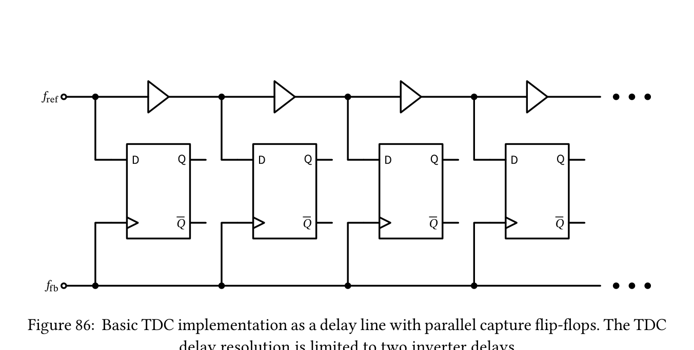
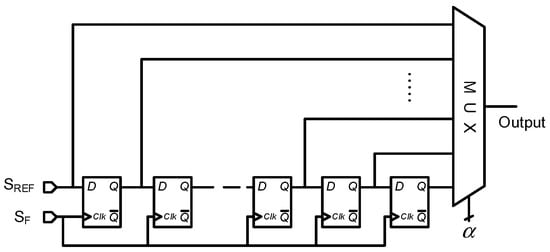

1. 校准模块放在 ADPLL 哪里
上一章讲通了 FCW 目标相位→测量实际相位→数字 PI→DCO→反馈。现在拆开最容易混淆的三个模块：TDC 负责测时间；DTC 负责制造可控延迟；DCO 负责改变频率。三者不是同一件事。
2. TDC：时间差怎样变成数字码
查看来源原图

TDC 输入两条待比较的事件边沿，例如参考事件和反馈事件。用一组延迟单元或等效时间基准，把事件间隔量化为整数码。示例模型：q=round(Δt/LSB)，回读估计为 q×LSB。
延迟链型
各级 tap 记录事件传播位置。分辨率受单元延迟、失配和温度影响；边界附近可能出现气泡码，需要编码校正。Vernier/多相/插值型
用更细的有效时间刻度换分辨率，同时考虑范围、功耗、亚稳态和线性度。3. TDC 交互：分辨率、量化与误差
先预测：把 TDC 的 LSB 从 10 ps 缩到 2 ps，其他条件不变，会怎样？
理想四舍五入、无噪声、无偏置模型；时间单位 ps。真实 TDC 的码制、符号、饱和范围和 DNL/INL 应以实现为准。
4. DTC：数字码如何变成时间
查看来源原图

DTC 和 DAC 的思想类似，只是输出量由电压变成边沿延迟。例如延迟链选择、可调负载或相位插值，输入码 D 控制边沿延后 Δt(D)。
常用局部模型：Δt(D)=t₀+KDTC·D。实际常伴随固定延迟、非线性、温度漂移和不同输入斜率下的响应差异。
5. DTC 交互：分数相位与延迟补偿
假设参考周期 Tref=10 ns，DTC 的满量程设为一个参考周期，整数控制范围 0…255。将希望补偿的分数相位转为时间，再映射为码字；真正的设计须检查 DTC 是否覆盖所需范围。
演示码字 round(255α)，实际延迟=码字×(10 ns/255)×(1+增益误差)。这是简化的单极性满量程示例，不代表所有 DTC 拓扑或实际 ADPLL 的时序对齐策略。
6. DCO：粗调、细调与增益测量
DCO 把数字字转换为频率。通常先靠粗调阵列（band/cap/current）覆盖工艺与温度，再靠细调阵列取得更小的频率步长；校准时可测得局部 KDCO=Δf/Δcode。
此处只演示局部线性关系，不对外推的 PVT、非单调码或 coarse/fine 切换作真实电路保证。
7. 校准闭环：从测量到写寄存器
把校准拆成四步会更容易看 RTL：选择模式→测量→估计/更新参数→返回正常闭环。
| 校准对象 | 测量量 | 常见回写 | 必须核实 |
|---|---|---|---|
| TDC | 码密度、延迟扫频、时间误差 | offset、比例系数、查表补偿 | 饱和范围、DNL/INL、亚稳态 |
| DTC | 码字与相位/时间的关系 | gain、offset、非线性 LUT | 相位周期回绕、时序边界 |
| DCO | 已知码字下的振荡频率 | band、KDCO、细调初值 | 温漂、单调性、可覆盖频带 |
8. 工程验收：看什么波形和指标
验证时按“原始测量值→补偿值→作用到哪条时钟路径→闭环误差变化”追踪，不要只看最终 LOCK 一位。
RTL / Mixed-signal
检查 TDC code、phase residual、FCW fractional、DTC code、DCO band/fine code、PI 积分状态，以及 coarse/fine 模式切换。电路与量产指标
检查 TDC LSB、噪声、DNL/INL、DTC range/gain、DCO tuning range、KDCO、phase noise、spur、lock/relock time 和 PVT corner。下一章把这些部件与系统级规格、建模、测试流程重新连起来。
全部内容、SVG 与计算脚本均内嵌，离线可用。每个数值实验均为教学近似模型。